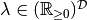
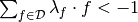

Sets of almost desirable gambles¶
- class murasyp.almostdesirs.ADesirSet(data=set([]))[source]¶
A mutable set of rays
Features:
There is an alternate constructor. If data is a Set without Mapping-members, then a relative set of almost desirable gambles is generated.
>>> ADesirSet(set('abc')) ADesirSet(set([Ray({'a': 1}), Ray({'b': 1}), Ray({'c': 1})]))
- add(data)[source]¶
Add a ray to the set of almost desirable gambles
type data: arguments accepted by the Ray constructor >>> D = ADesirSet() >>> D ADesirSet(set([])) >>> D.add({'a': -.06, 'b': .14, 'c': 1.8, 'd': 0}) >>> D ADesirSet(set([Ray({'a': '-1/30', 'c': 1, 'b': '7/90'})]))
- discard(data)[source]¶
Remove a ray from the credal set
type data: arguments accepted by the Ray constructor >>> D = ADesirSet({'a','b'}) >>> D ADesirSet(set([Ray({'a': 1}), Ray({'b': 1})])) >>> D.discard(Ray({'a'})) >>> D ADesirSet(set([Ray({'b': 1})]))
- pspace()[source]¶
The possibility space of the set of desirable gambles
returns: the possibility space of the set of desirable gambles, i.e., the union of the domains of the rays it contains rtype: frozenset >>> r = Ray({'a': .03, 'b': -.07}) >>> s = Ray({'a': .07, 'c': -.03}) >>> D = ADesirSet({r, s}) >>> D.pspace() frozenset(['a', 'c', 'b'])
- discard_redundant()[source]¶
Remove redundant elements from the set of desirable gambles
Redundant elements are those that are not extreme rays of set of desirable gambles’s convex conical hull.
>>> D = ADesirSet(set('abc')) >>> D.add({'a': 1, 'b': 1, 'c': 1}) >>> D ADesirSet(set([Ray({'a': 1, 'c': 1, 'b': 1}), ...])) >>> D.discard_redundant() >>> D ADesirSet(set([Ray({'a': 1}), Ray({'b': 1}), Ray({'c': 1})]))
- set_lower_pr(data, val)[source]¶
Set the lower probability/prevision (expectation) of an event/gamble
The marginal gamble corresponing to the prevision specification is calculated and added to the set of almost desirable gambles.
>>> D = ADesirSet() >>> D.set_lower_pr(Gamble({'a', 'b'}) | {'a', 'b', 'c'}, .4) >>> D ADesirSet(set([Ray({'a': 1, 'c': '-2/3', 'b': 1})]))
Note
The domain of the input gamble determines the conditioning event.
- set_upper_pr(data, val)[source]¶
Set the upper probability/prevision (expectation) of an event/gamble
The marginal gamble corresponing to the prevision specification is calculated and added to the set of almost desirable gambles.
>>> D = ADesirSet() >>> D.set_upper_pr(Gamble({'a', 'b'}) | {'a', 'b', 'c'}, .4) >>> D ADesirSet(set([Ray({'a': -1, 'c': '2/3', 'b': -1})]))
Note
The domain of the input gamble determines the conditioning event.
- set_pr(data, val)[source]¶
Set the probability/prevision (expectation) of an event/gamble
This is identical to setting the lower and upper prevision to the same value.
>>> D = ADesirSet() >>> D.set_pr(Gamble({'a', 'b'}) | {'a', 'b', 'c'}, .4) >>> D ADesirSet(set([Ray({'a': -1, 'c': '2/3', 'b': -1}), Ray({'a': 1, 'c': '-2/3', 'b': 1})]))
Note
The domain of the input gamble determines the conditioning event.
- asl()[source]¶
Check whether the set of almost desirable gambles avoids sure loss
rtype: bool We solve a feasibility (linear programming) problem: If we can find a vector  such that , then the set of almost desirable gambles
 incurs sure loss.
incurs sure loss.>>> D = ADesirSet(set('abc')) >>> D.add({'a': -1, 'b': -1, 'c': 1}) >>> D.add({'a': 1, 'b': -1, 'c': -1}) >>> D.asl() True >>> D.add({'a': -1, 'b': 1, 'c': -1}) >>> D.asl() False
- get_credal()[source]¶
Generate the equivalent credal set
returns: the credal set that is equivalent as an uncertainty model rtype: CredalSet >>> D = ADesirSet(set('abc')) >>> D.set_lower_pr({'a': 1, 'b': 0, 'c': 1}, .5) >>> D.get_credal() CredalSet(set([PMFunc({'a': '1/2', 'b': '1/2'}), PMFunc({'c': '1/2', 'b': '1/2'}), PMFunc({'a': 1}), PMFunc({'c': 1})]))